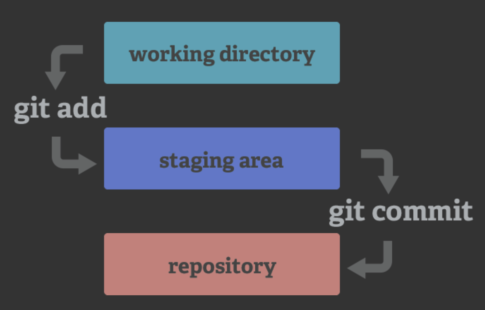
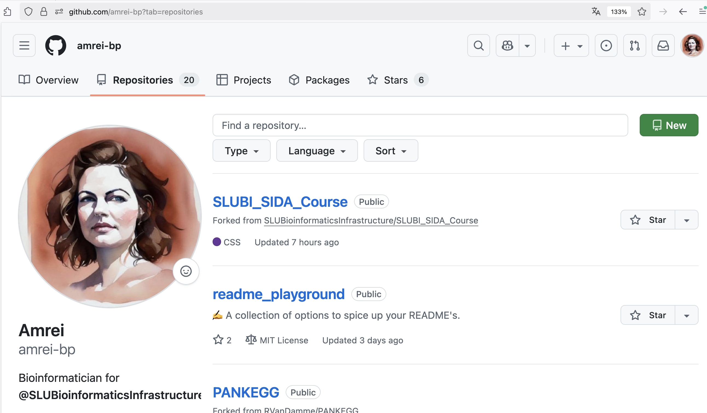
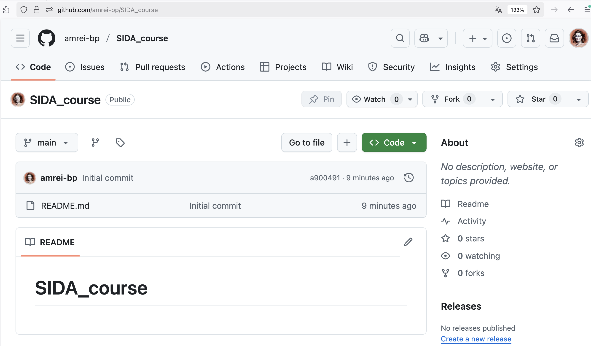
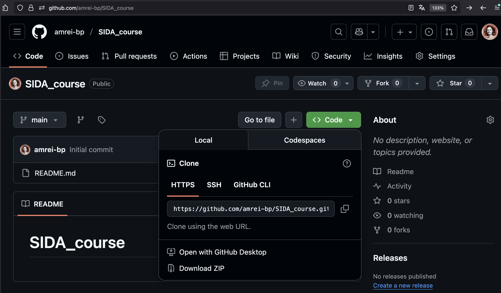
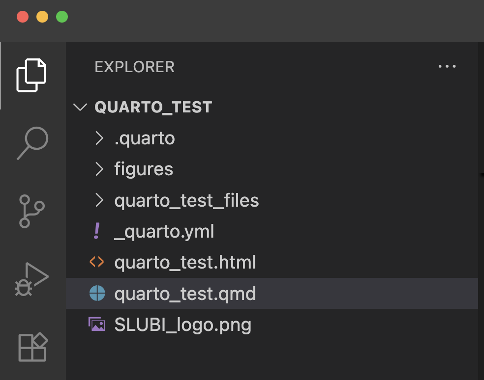
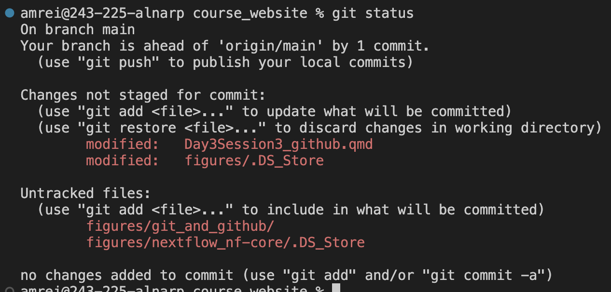
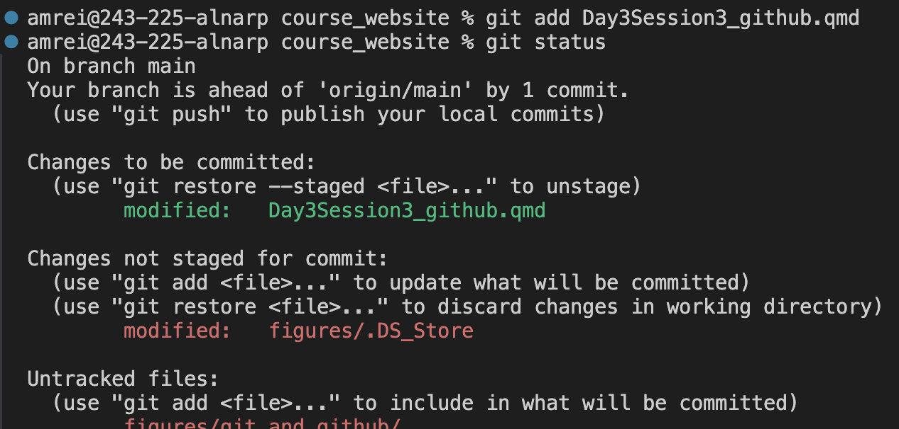
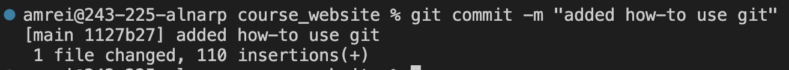
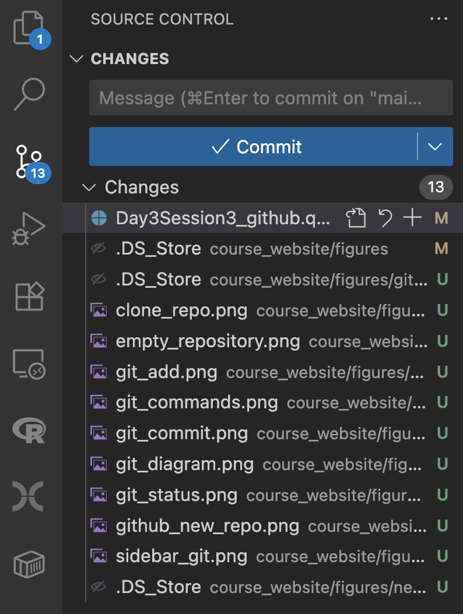
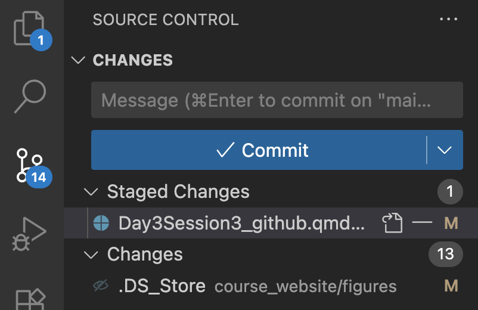

Version control: git and Github
Git is a version control software that is fully distributed - meaning that each project folder contains the full history of the project. These project folders are also called repositories and can be on several computers, or servers.
Github is a code hosting platform that is based on git. Here you can store, track and publish code (and code only, do NOT use github for data!). On Github you can collaborate with colleagues and work on projects together.
A repository in git is the .git/ folder inside of your directory. This repository tracks all changes made to files in your project and contains your project history. Usually we refer to the git repository as the local repository.
A repository in GitHub is where you can store your code, your files, together with their revision history. Repositories can be public or private, and might have several collaborators. Usually we refer to the Github repository as the remote repository.
Let’s have a closer look at how git works:
git
Git has three main states that your files can reside in: modified, staged, and committed:
- Modified means that you have changed the file but have not committed it to your database yet.
- Staged means that you have marked a modified file in its current version to go into your next commit snapshot.
- Committed means that the data is safely stored in your local database.
This leads to the three main sections of a Git project: the working directory, the staging area, and the Git directory (or repository).

And the basic commands of git:

These basic operations are all done on your local system. You have the entire history of the project on your local disk, and do not need an internet connection to work on your data with git. You can do all your commits on your local computer and later push them to a remote repostitory, like Github.
Use git with Github
To get started with GitHub in VS Code, you’ll need to install Git, create a GitHub account and install the GitHub Pull Requests and Issues extension.
Create a new repository on Github
Go to www.github.com, and sign in if you haven’t done so yet. On your profile page klick on the tab Repositories (if you are not on your profile you can navigate there by clicking on the icon in the top right corner).
Then create a new repository by clicking on the green button New:

- Choose a repository name - there will be a green checkmark if the name is available.
- (optional) Add a short description of the repository contents.
- Choose if the repository should be public or private.
- Add a README (remember, good data management practices?)
Click on the green button Create repository to create repository.
A public repository is visible to anybody. People can also copy clone the repository and then change code in their copy. However, they cannot change the code in your repository unless you give them permission or make them collaborators.
A private repository is only visible by you and people you gave permission to.

Add files to repository on Github
You can add files to the repository by clicking on the button with the plus, +. You can either click Create new file and edit it on the Github page directly, or Upload files from your computer.
Whenever you save a file on Github, it automatically creates a commit that will be part of the repository history.
Add files on your local computer
To change the content of the repository on your local computer you need to copy the repository content to your local computer. This is called cloning.

- Click on the green
Codebutton and selectHTTPSon theLocaltab. - Copy the URL to the clipboard.
- Open VScode and type `
> Git: Cloneinto the search bar. - Copy in the URL you just copied from Github.
- Follow the prompts to select a location for the directory on your computer.
- Open the repository with VScode.
Now you can add files, edit and execute your code. Once you are satisfied with the changes you can stage, commit and push them.
You can now for example add a quarto homepage to your repository, so you have an interactive document to run and publish your analyses. Have a look at the quarto section, Creating a Project of this course to see how.
Stage, commit, and push
To add your changes to the repository history you can either use the command line in the terminal of VScode, or the shortcut on the side panel on the left of the VScode window that looks like three circles that are connected by two wiggly lines:

Here is a little reminder of what we are trying to achieve:
via the command line
In the terminal of VScode, check the status of your project with git status.

There are a few files that are already tracked by git, but that have untracked changes, and a few files that are not tracked. (There is also one commit that is not yet pushed to the remote repository.) At the bottom it even says which commands to use to stage and commit changes.
Now, I can stage the files with git add <filename>:

Now we can see in green the changes that are to be committed. I can commit them with `git commit -m “>commit message>”:

The commit is then incorporated into the repository, and briefly summarized in the command line. I can now use git push to push the changes to the remote repository on Github and publish them.
via VScode
Clicking on the git shortcut button in VScode opens a pane that shows which changes have been made.

By clicking on the plus to the right of the file you can stage the file, and then commit them with the blue commit button and a commit message. You can also commit and push at the same time (by selecting that option in the drop down menu of the blue commit button).

A commit message should always be informative. They will be the identifiers if you want to “go back in time” and revert to an earlier version of your repository.
using git collaboratively
We have now introduced how you can use git and github by yourself. However, it is a very poweful tool for working together with others. Unfortunately, getting into the details of that would exceed the time we have in this course.
Here are some resources for you to look into for further reading and training:
The git book.